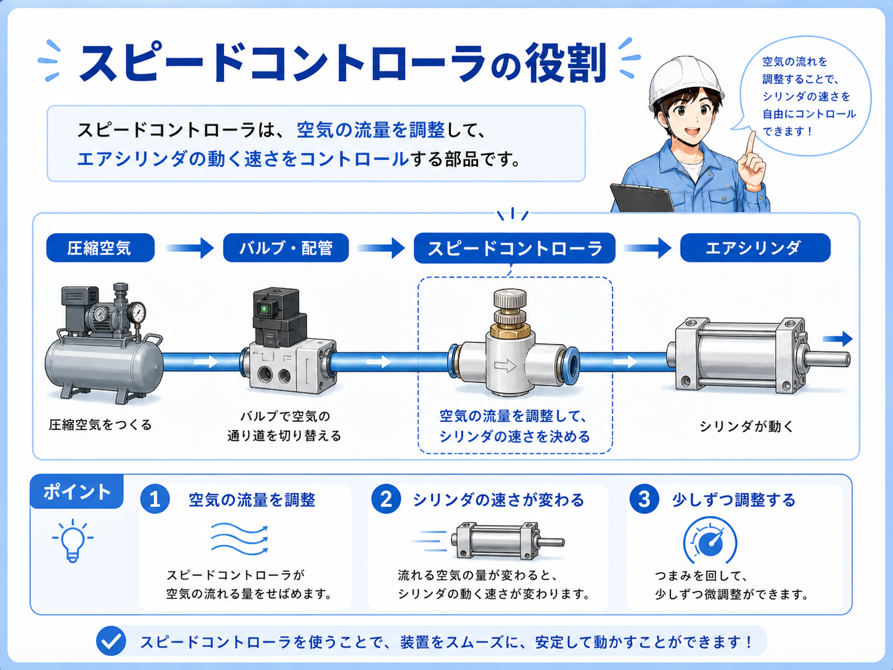
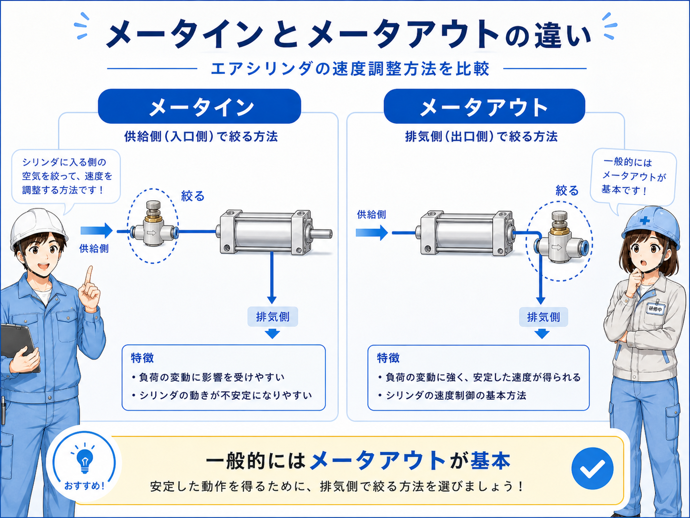
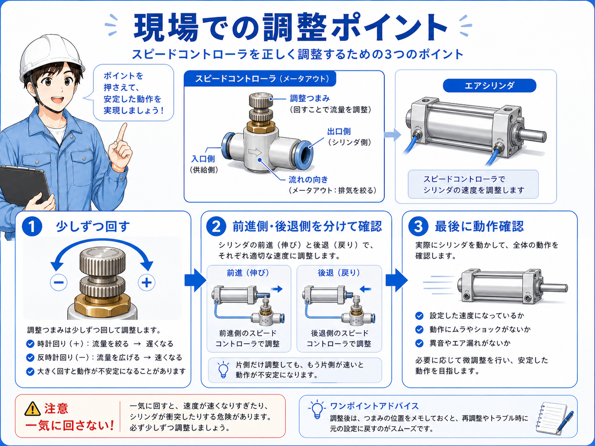

スピードコントローラとは
スピードコントローラは、エアシリンダへ出入りする空気の流量を調整して、シリンダの動く速さを変える部品です。 現場では「スピコン」と呼ばれることも多いです。
エアシリンダは、空気圧で前進・後退します。 その時に空気が一気に流れると、シリンダが速く動きすぎたり、端で強く当たったりすることがあります。 スピードコントローラで流量を絞ることで、動きをなめらかに調整します。
調整ねじを回すことで流量を変えます。 一般的には、閉める方向で遅くなり、開ける方向で速くなりますが、調整前には必ず対象の動作と方向を確認します。
まずはこう覚える
スピードコントローラは、エアシリンダの速度調整役です。圧力を変える部品ではなく、空気の流れる量を絞って速さを調整する部品です。

先輩スピコンは、シリンダの速さを調整する部品だよ。動きが速すぎる時に、圧力を下げる前にスピコンを見ることも多いね。

後輩圧力で力を調整、スピコンで速さを調整、という感じで分けて考えるんですね。
スピードコントローラの基本構成

基本の構成は、エア源、圧力レギュレータ、エアバルブ、スピードコントローラ、エアシリンダの順で考えると分かりやすいです。 スピコンは、エアシリンダのポート近くに付いていることが多いです。
エアシリンダには、前進側と後退側があります。 どちらのポートについているスピコンを調整するかで、前進速度や後退速度が変わります。
ワンタッチ継手と一体になったスピードコントローラも多く、チューブが差し込まれている部品のつまみを回して調整します。
前進側・後退側を分けて見る
シリンダの片側だけを調整したい場合、どちらのポートが前進側・後退側に関係しているか確認します。反対側を触ると、意図しない動作が変わることがあります。
スピードコントローラを使う代表的な場面
スピードコントローラは、エアシリンダの動きを安定させたい場面でよく使います。 たとえば、ワークを押さえる、押し出す、上げ下げする、クランプする、ストッパを出すなどの動作です。
速すぎると衝撃が大きくなり、部品の破損や位置ずれにつながることがあります。 遅すぎるとタクトタイムが伸びたり、動作確認タイムアウトの原因になったりします。
| 使う場面 | スピコンの役割 | 現場での見方 |
|---|---|---|
| ワーク押さえ | 急に当たらないように速度を調整する | ワークへの衝撃、押さえ位置、戻り速度を見る |
| ストッパ | 出る速度・戻る速度を調整する | 干渉、停止位置、センサー検出タイミングを見る |
| 搬送・押し出し | ワークを安定して動かすために速度を整える | 速すぎる衝撃、遅すぎるタクト、ばらつきを見る |
| 昇降動作 | 上昇・下降速度を安定させる | 落下感、荷重、スピード、エア圧を確認する |
速度は動作の安定に関係する
スピードコントローラの調整は、単に速い・遅いだけでなく、衝撃、位置ずれ、センサー検出、タクトタイムにも関係します。
速すぎる時・遅すぎる時の違い

シリンダが速すぎると、端で強く当たる、ワークがずれる、部品に衝撃が出る、センサーが検出する前に動きすぎるなどの問題が起きることがあります。
シリンダが遅すぎると、設備の動作が間に合わない、タイムアウトになる、次工程とのタイミングが合わないなどの原因になります。 ただし、遅い原因がスピコンだけとは限らず、圧力不足やエア漏れ、負荷の増加も確認します。
| 状態 | 起きやすいこと | 確認する場所 |
|---|---|---|
| 速すぎる | 衝撃が大きい、ワークがずれる、端で強く当たる | スピコン開きすぎ、クッション、メカ側の当たり |
| 遅すぎる | タクトが伸びる、タイムアウト、動作が途中で止まる | スピコン絞りすぎ、圧力不足、エア漏れ、負荷増加 |
| ばらつく | 毎回の動作速度が安定しない | 圧力変動、配管漏れ、シリンダ抵抗、スピコン詰まり |
一気に大きく回さない
スピコンを一気に回すと、シリンダが急に速くなったり、逆に動かなくなったりすることがあります。調整は少しずつ行い、動作を確認しながら進めます。
空気と速度調整の流れ

空気の流れを見るときは、エアバルブからどちらのシリンダポートへ空気が入るかを確認します。 反対側の空気がどのように抜けるかも、速度調整では大切です。
一般的なエアシリンダでは、排気側の空気を絞って速度を安定させる考え方がよく使われます。 ただし、回路や部品によって考え方が変わるため、図面と現物を合わせて確認します。
1. 動作方向を見る
前進を調整したいのか、後退を調整したいのかを確認します。
2. 対象スピコンを見る
どちらのポートに付いたスピコンが対象かを確認します。
3. 少しずつ調整
調整ねじを少しずつ回し、動作を見ながら合わせます。
4. ロックを確認
調整後にロックナットやロック機構が効いているか確認します。
先輩スピコンを触る時は、まず前進と後退のどちらを変えたいのか確認する。逆側を触ると、思った動きにならないことがあるよ。
後輩どっちの動作を変えたいかを決めてから、対象のスピコンを少しずつ調整するんですね。
現場で見るときのポイント
現場でスピードコントローラを見るときは、まずどのシリンダのどの動作に関係しているかを確認します。 似たようなスピコンが複数並んでいることも多いため、対象を間違えないことが大切です。
次に、調整ねじの開き具合やロック状態を見ます。 調整後にロックが緩いと、振動や作業中の接触で設定が変わることがあります。
また、動作が遅い場合は、スピコンの絞りすぎだけでなく、圧力不足、エア漏れ、チューブ折れ、フィルタ詰まり、シリンダの抵抗も確認します。
ここを覚える
スピコンは速度調整の部品ですが、動作不良の原因がスピコンとは限りません。圧力、漏れ、配管、負荷、センサー検出まで合わせて確認します。
対象の動作
前進・後退のどちらを調整したいのかを確認します。
調整量
一気に回さず、少しずつ変えて動作を確認します。
ロック状態
調整後にロックナットやロック機構が効いているか確認します。
周辺要因
圧力不足、エア漏れ、配管折れ、シリンダ抵抗も確認します。
まとめ：スピードコントローラはシリンダ速度を整える部品
スピードコントローラは、エアシリンダへ出入りする空気の流量を調整して、シリンダの速度を整える部品です。 速すぎる動作や遅すぎる動作を調整し、衝撃や位置ずれ、タクトへの影響を抑えるために使います。
現場で調整するときは、前進側か後退側か、どのスピコンが対象かを確認し、少しずつ調整します。 速度の問題に見えても、圧力不足やエア漏れ、配管折れが原因の場合もあるため、周辺も合わせて確認することが大切です。
この記事の結論
スピードコントローラは、エアシリンダの速度を調整する基本部品です。対象の動作方向を確認し、少しずつ調整し、圧力や漏れなど周辺要因も合わせて見ましょう。